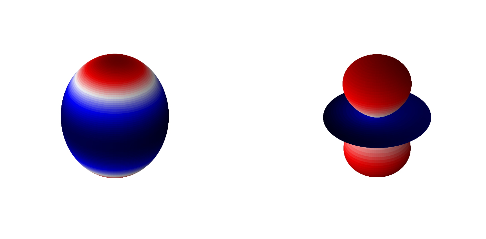
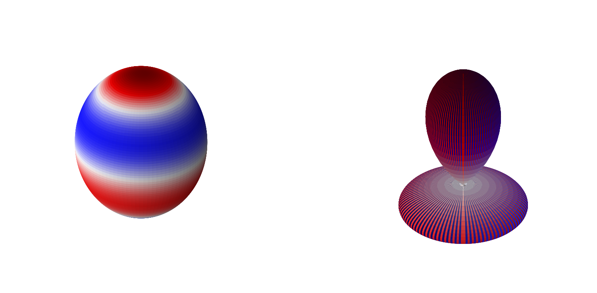
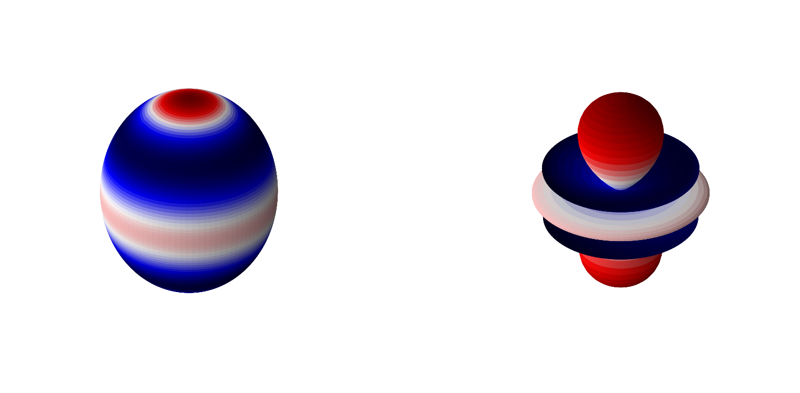
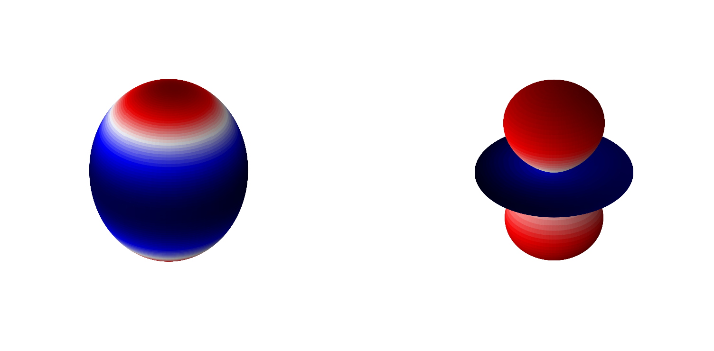
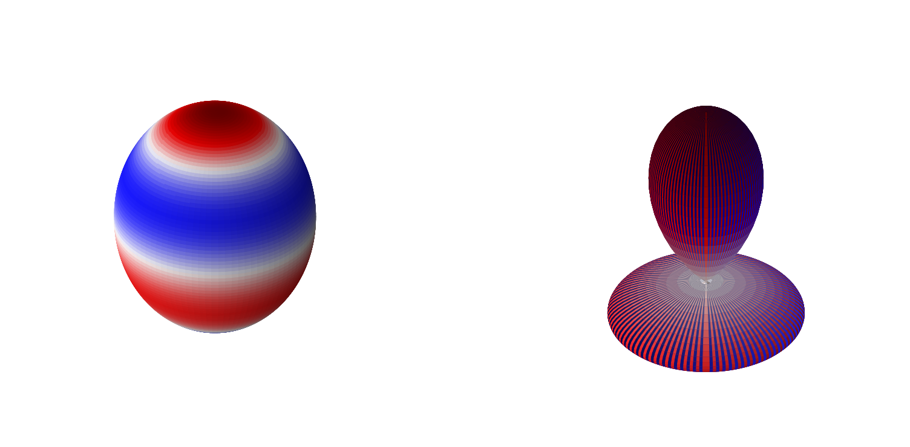
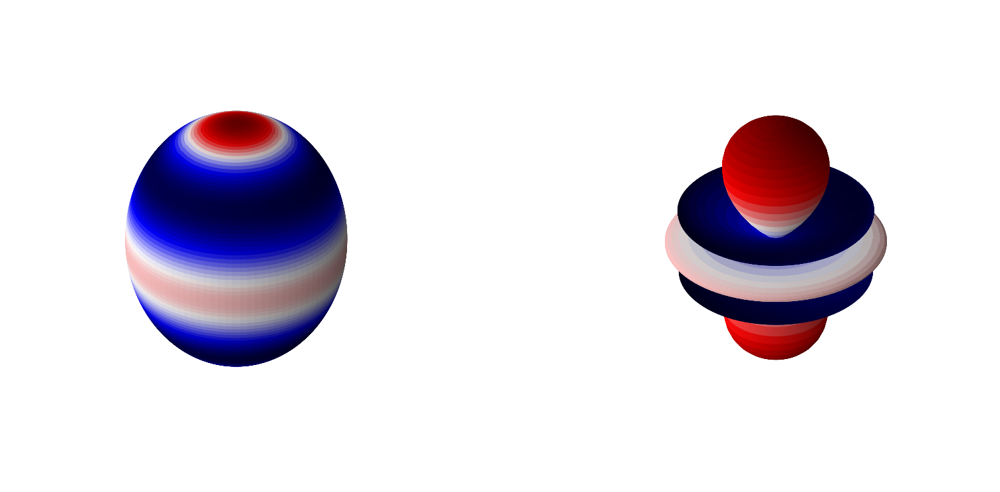

Rigid Rotator
Contents
2.3.9. Rigid Rotator#
We have already looked at the vibrations of a diatomic molecule. Now we turn our attention to the rotations of a diatomic molecule. We will first consider the bond to be rigid (no vibration). We will investigate later how these two things can couple together. We consider the rotation of a diatomic molecule with two masses, \(m_1\) and \(m_2\), around the center-of-mass (C.O.M.) of the molecule.

Given the above depiction of the system, we can define some important relationships.
\(\mu = \frac{m_1m_2}{m_1+m_2}\)
\(r_0 = r_1 + r_2\)
\(m_1r_1 = m_2r_2\)
\(KE = \frac{1}{2}m_1r_1\omega^2 + \frac{1}{2}m_2r_2\omega^2 = \frac{1}{2}(m_1r_1^2+m_2r_2^2)\omega^2 = \frac{1}{2}Iw^2\)
where \(I\) is the moment of intertia
\(I = m_1r_1^2+m_2r_2^2 = \mu r_0^2\)
Where the last two relationships lead to the conclusion that this problem can be reduced to a one-body like problem with \(KE = \frac{1}{2}\mu r_0^2 \omega^2\).
We now introduce the concept of angular momentum, \(\mathbf{L}= \mathbf{r} \times \mathbf{p}\). For rotation, it can be shown that \(\mathbf{L} = L = I\omega\). Thus the kinteic energy operator can be rewritten as
\(KE = \frac{L^2}{2I}\).
We must now consider the motion of the reduced mass on a sphere in a quantum mechanical way. We start by writing out the Hamiltonian
\(\hat{H} = \hat{K} + \hat{V} = -\frac{\hbar^2}{2\mu}\nabla_{xyz}^2+V(x,y,z)\).
where \(\nabla_{xyz}^2\) is the Laplacian operator in cartesian coordinates,
\( \nabla_{xyz}^2 = \frac{\partial^2}{\partial x} + \frac{\partial^2}{\partial y} + \frac{\partial^2}{\partial z}\).
Since we are considering only motion on a sphere it will be convenient to change to spherical polar coordinates.

Converting the \(\nabla^2\) operator into spherical coordinates is a pain but it is
\(\nabla^2_{r\theta\phi} = \frac{1}{r^2}\frac{\partial}{\partial r}\left(r^2\frac{\partial}{\partial r}\right) + \frac{1}{r^2\sin\theta}\frac{\partial}{\partial\theta}\left(\sin\theta\frac{\partial}{\partial\theta}\right)+\frac{1}{r^2\sin^2\theta}\frac{\partial^2}{\partial^2\phi}\).
Also note that since we are restricting the bond vibration to be zero the potential in this problem is zero. Thus, in spherical coordinates with zero potential, we have a Schrodinger equation
\( -\frac{\hbar^2}{2\mu}\left[\frac{1}{r^2}\frac{\partial}{\partial r}\left(r^2\frac{\partial}{\partial r}\right) + \frac{1}{r^2\sin\theta}\frac{\partial}{\partial\theta}\left(\sin\theta\frac{\partial}{\partial\theta}\right)+\frac{1}{r^2\sin^2\theta}\frac{\partial^2}{\partial^2\phi}\right] \psi(r,\theta,\phi) = E \psi(r,\theta,\phi)\).
Note that since \(r\) does not change (bond doesn’t vibrate), we can write \(\psi(r_0,\theta,\phi) = BY(\theta,\phi)\) where \(B\) is a constant. We will thus try and solve for functions \(Y(\theta,\phi)\). Also, all \(\frac{\partial}{\partial r}\) terms go to zero. So now we have
\( -\frac{\hbar^2}{2\mu r_0^2}\left[\frac{1}{\sin\theta}\frac{\partial}{\partial\theta}\left(\sin\theta\frac{\partial}{\partial\theta}\right)+\frac{1}{\sin^2\theta}\frac{\partial^2}{\partial^2\phi}\right] Y(\theta,\phi) = E Y(\theta,\phi)\).
Note that \(\mu r_0^2 = I\). We will solve this problem by the method of separation of variables. The Schrodinger equation can be algebraically rearranged to give us
\( \left[\sin\theta\frac{\partial}{\partial\theta}\left(\sin\theta\frac{\partial}{\partial\theta}\right)+\frac{2IE}{\hbar^2}\sin^2\theta \right] Y(\theta,\phi) = -\frac{\partial^2}{\partial^2\phi} Y(\theta,\phi)\).
We now substitue \(Y(\theta,\phi) = \Theta(\theta)\Phi(\phi)\) and \(\beta = \frac{2IE}{\hbar^2}\) to get
\( \left[\sin\theta\frac{\partial}{\partial\theta}\left(\sin\theta\frac{\partial}{\partial\theta}\right)+\beta\sin^2\theta \right] \Theta(\theta)\Phi(\phi) = -\frac{\partial^2}{\partial^2\phi} \Theta(\theta)\Phi(\phi)\).
Divide both sides of the equation above by \(\Theta(\theta)\Phi(\phi)\) and note that the operator on the right-hand side is independent of \(\theta\) to yield
\( \frac{\sin\theta}{\Theta(\theta)}\frac{\partial}{\partial\theta}\left(\sin\theta\frac{\partial}{\partial\theta}\right)\Theta(\theta)+\beta\sin^2\theta = -\frac{1}{\Phi(\phi)}\frac{\partial^2}{\partial^2\phi} \Phi(\phi)\).
Now the left-hand side is independent of \(\phi\) and the right-hand side is independent of \(\theta\). Since these two things are equal but independent of the other’s variable they must be constant. We will define this constant as \(m^2\) (for reasons that will become clear later) and solve the following two equations independently
\(m^2 = -\frac{1}{\Phi(\phi)}\frac{\partial^2}{\partial^2\phi} \Phi(\phi) \tag{1}\)
\(m^2 = \frac{\sin\theta}{\Theta(\theta)}\frac{\partial}{\partial\theta}\left(\sin\theta\frac{\partial}{\partial\theta}\right)\Theta(\theta)+\beta\sin^2\theta \tag{2}\)
2.3.9.1. Solutions to \(\phi\) equation (1)#
Equation (1) above can me simply rearranged to give
\(-m^2 \Phi(\phi)= \frac{\partial^2}{\partial^2\phi} \Phi(\phi)\)
which is straightforward eigenvalue-eigenvector problem with solutions
\(\Phi(\phi) = A_me^{im\phi}\quad \mathrm{and}\quad A_{-m}e^{-im\phi}\).
Applying boundary conditions, \(\Phi(\phi+2\pi) = \Phi(\phi)\) yields the quantization
\(m=0,\pm 1, \pm 2, ...\)
Thus we can write
\(\Phi(\phi) = Ae^{im\phi} \quad m=0,\pm 1, \pm 2, ...\).
Normalization yields \(A=\frac{1}{\sqrt{2\pi}}\).
2.3.9.2. Solutions to \(\theta\) equation (2)#
The solutions to equation (2) above are not as straightforward as those for equation (1). We start by rewriting the original equation here:
\(m^2 = \frac{\sin\theta}{\Theta(\theta)}\frac{\partial}{\partial\theta}\left(\sin\theta\frac{\partial}{\partial\theta}\right)\Theta(\theta)+\beta\sin^2\theta\).
Now make a change of variable \(x = \cos\theta\) which yields \(\frac{dx}{-\sin\theta}=d\theta\) and define \(P(x) = \Theta(\theta)\). Plugging these in an performing some rearrangements yields the Legendre equation
\((1-x^2)\frac{d^2}{dx^2}P(x)-2x\frac{d}{dx}P(x)+\left[\beta-\frac{m^2}{1-x^2}\right]P(x) = 0\).
For \(\Theta(\theta)\) to be continous \(\beta=J(J+1)\) where \(J=0,1,2...\). Note that this also puts a limit on \(m\) with \(m=0,\pm 1, \pm 2, ... , \pm J\). The quantization of \(\beta\) leads to the quantization of energy
\(E_J = \frac{\hbar^2}{2I}J(J+1)\).
The solutions, \(P(x)\), to the Legendre equation are known as the Associated Legendre polynomials.
\(P_\nu^m = (-1)^m(1-x^2)^{m/2}\frac{d^m}{dx^m}P_\nu(x)\)
where
\(P_\nu(x) = \sum_{k=0}^{\infty}\frac{(-\nu)_k(\nu+1)_k}{k!^2}\left(\frac{1-x}{2}\right)^k\)
and \((\nu)_k = \frac{(\nu+k-1)!}{(\nu-1)!}\).
# plot of some of the Legendre polynomials
import numpy as np
import matplotlib.pyplot as plt
%matplotlib inline
from scipy.special import lpmv
x = np.arange(-1,1,0.01)
plt.figure(figsize=(12,12),dpi= 80, facecolor='w', edgecolor='k')
plt.tick_params(axis='both',labelsize=20)
plt.grid(b=True, which='major', axis='both', color='#808080', linestyle='--')
for l in range(6):
for m in range(l):
label = "l=" + str(l) + ", m=" + str(m)
plt.plot(x,lpmv(m,l,x),lw=4,label=label)
plt.legend(fontsize=16)
<matplotlib.legend.Legend at 0x7fae0f84d670>
2.3.9.3. Combining both solutions#
The total wavefunctions are the product of \(\Phi(\phi)\) and \(\Theta(\theta)\). It is easy to see
\(Y_l^m(\theta,\phi)\propto P_l^{|m|}(\cos\theta)e^{im\phi}\).
These are the spherical harmonics. We will now look at some of these.
# make two plots of the same spherical harmonic
from mpl_toolkits.mplot3d import Axes3D
from matplotlib import cm, colors
import numpy as np
import matplotlib.pyplot as plt
%matplotlib inline
from scipy.special import sph_harm
def plot_spherical_harmonic(m,l,theta=np.linspace(0,np.pi,100),phi=np.linspace(0,2*np.pi,100)):
THETA, PHI = np.meshgrid(theta, phi)
X = np.sin(THETA) * np.cos(PHI)
Y = np.sin(THETA) * np.sin(PHI)
Z = np.cos(THETA)
# Calculate the spherical harmonic Y(l,m) and normalize to [0,1]
fcolors = sph_harm(m, l, PHI, THETA).real
s = sph_harm(m, l, PHI, THETA).real
s /= s.max()
fmax, fmin = fcolors.max(), fcolors.min()
fcolors = (fcolors - fmin)/(fmax - fmin)
# Set the aspect ratio to 1 so our sphere looks spherical
fig = plt.figure(figsize=(24,12),dpi= 80, facecolor='w', edgecolor='k')
ax = fig.add_subplot(1, 2, 1, projection='3d')
ax.plot_surface(X, Y, Z, rstride=1, cstride=1, facecolors=cm.seismic(fcolors))
ax.set_axis_off()
ax = fig.add_subplot(1, 2, 2, projection='3d')
ax.plot_surface(X*s, Y*s, Z*s, rstride=1, cstride=1, facecolors=cm.seismic(fcolors))
# Turn off the axis planes
ax.set_axis_off()
plt.show()
import numpy as np
import matplotlib.pyplot as plt
from scipy.special import sph_harm
%matplotlib inline
plot_spherical_harmonic(0,1)
plot_spherical_harmonic(0,2)
plot_spherical_harmonic(0,3)
plot_spherical_harmonic(0,4)
plot_spherical_harmonic(0,5)
 






plot_spherical_harmonic(1,2)